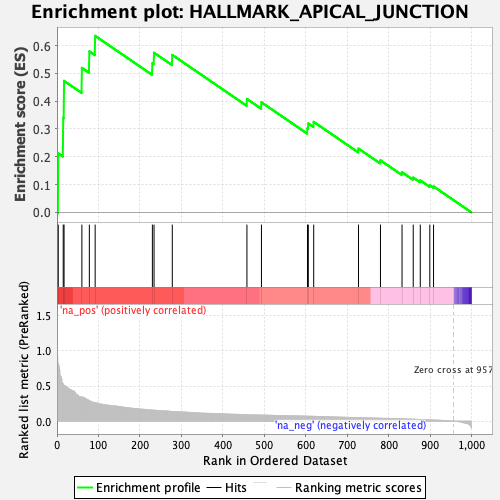
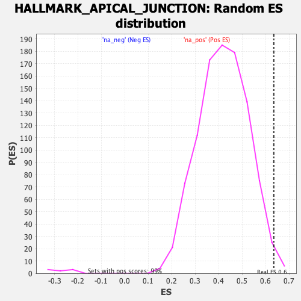

| Dataset | gene_rank |
| Phenotype | NoPhenotypeAvailable |
| Upregulated in class | na_pos |
| GeneSet | HALLMARK_APICAL_JUNCTION |
| Enrichment Score (ES) | 0.6349339 |
| Normalized Enrichment Score (NES) | 1.5100383 |
| Nominal p-value | 0.010080645 |
| FDR q-value | 0.06861906 |
| FWER p-Value | 0.13 |

| SYMBOL | RANK IN GENE LIST | RANK METRIC SCORE | RUNNING ES | CORE ENRICHMENT | |
|---|---|---|---|---|---|
| 1 | CADM2 | 3 | 0.820 | 0.2121 | Yes |
| 2 | ACTB | 15 | 0.529 | 0.3398 | Yes |
| 3 | NEGR1 | 17 | 0.511 | 0.4728 | Yes |
| 4 | YWHAH | 60 | 0.342 | 0.5197 | Yes |
| 5 | THY1 | 78 | 0.292 | 0.5791 | Yes |
| 6 | CNTN1 | 92 | 0.263 | 0.6349 | Yes |
| 7 | SLIT2 | 230 | 0.158 | 0.5364 | No |
| 8 | ATP1A3 | 234 | 0.156 | 0.5742 | No |
| 9 | ACTG1 | 278 | 0.138 | 0.5664 | No |
| 10 | PKD1 | 458 | 0.092 | 0.4078 | No |
| 11 | CADM3 | 493 | 0.087 | 0.3958 | No |
| 12 | SIRPA | 604 | 0.071 | 0.3021 | No |
| 13 | CX3CL1 | 606 | 0.071 | 0.3196 | No |
| 14 | BAIAP2 | 619 | 0.069 | 0.3253 | No |
| 15 | CDH11 | 727 | 0.050 | 0.2293 | No |
| 16 | NRXN2 | 780 | 0.041 | 0.1870 | No |
| 17 | FSCN1 | 832 | 0.035 | 0.1440 | No |
| 18 | SLC30A3 | 859 | 0.028 | 0.1248 | No |
| 19 | SDC3 | 876 | 0.024 | 0.1147 | No |
| 20 | MVD | 899 | 0.018 | 0.0969 | No |
| 21 | CTNNA1 | 908 | 0.016 | 0.0930 | No |
